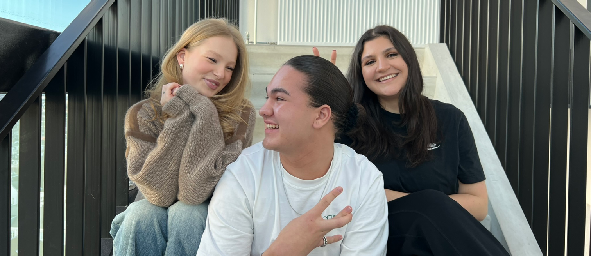

Fomo De Podcast
Altijd op de hoogte, nooit iets missen
De Podcast
Bij FOMO de Podcast praten we over de impact van social media van creativiteit en verbinding tot onzekerheid, pesten en FOMO (Fear of Missing Out). Het gevoel en de angst om iets te missen, herkennen we allemaal en heeft ons geïnspireerd om deze podcast te starten.
We delen persoonlijke verhalen, bespreken de positieve en negatieve kanten van social media en nodigen je uit om samen met ons stil te staan bij de invloed ervan. Onze missie? Bewustwording creëren en een plek bieden waar iedereen zich herkend voelt.